数据结构之树 链接到标题
树的定义 链接到标题
树的结构是一个递归的定义，树是以分支关系定义的层次结构，树(Tree)是 n(≥0)n(≥0)个结点的有限集，它或为空树(n=0)，或为非空树，对于非空树 T：
- 有且仅有一个称之为根的结点.
- 除根结点以外的其余结点可分为 m(m>0)个互不相交的有限集 T1,T2,…,TmT1,T2,…,Tm 其中每个集合本身又是一棵树，并且称为根的子树.
树的基本术语 链接到标题
- 结点：树中的一个独立单元，包含一个数据元素及若干指向其子树的分支。
- 结点的度：结点拥有的子树数称为结点的度。
- 树的度：树的度是树内各结点度的最大值。
- 叶子：度为 0 的结点称为叶子或终端结点。
- 非终端结点：度不为 0 的结点称为非终端结点或分支结点，除根节点之外，非终端结点也称为内部结点。
- 双亲和孩子：结点的子树的根称为该结点的孩子，相应的，该结点称为孩子的双亲。
- 兄弟：同一个双亲的孩子之间互称兄弟。
- 祖先：从根到该结点所经分支上的所有结点
- 子孙：以某结点为根的子树中的任一结点都称为该结点的子孙
- 层次：结点的层次从根开始定义起，根为第一层，根的孩子为第二层，树中任一结点的层次等于其双亲结点的层次加 1。
- 堂兄弟：双亲在同一层的结点互为堂兄弟。
- 树的深度：树中结点的最大层次称为树的深度或高度。
- 有序树和无序树：如果将树中结点的各子树看成从左到右是有次序的(即不能互换),则称该树为有序树，否则称为无序树。在有序树中最左边的子树的根称为第一个孩子，最右边的称为最后一个孩子。
- 森林：森林是 m 棵互不相交的树的集合，对树中每个结点而言，其子树的集合即为森林。由此，也可以用森林和树相互递归的定义来描述树。
- 任何一棵树都是一个二元组 Tree(root,F),其中 root 是根结点，F 是 m 棵树的森林。
二叉树 链接到标题
二叉树的定义 链接到标题
二叉树(Binary Tree)是 n(n≥0)n(n≥0)个结点所构成的集合，它或为空树(n=0)，或为非空树，对于非空树 T：
- 有且仅有一个称之为根的结点
- 除根结点以外的其余结点分为两个互不相交的子集 T1T1 和 T2T2,分别称为 T 的左子树和右子树，且 T1T1 和 T2T2 本身又都是二叉树
二叉树与树的区别 链接到标题
- 二叉树每个结点至多只有两棵子树，即二叉树中不存在度大于 2 的结点。
- 二叉树的子树有左右之分，其次序不能任意颠倒
树与二叉树 ADT 定义 链接到标题
树的 ADT 定义 链接到标题
InitTree(&T) //构造空树T
DestroyTree(&T) //销毁树
CreateTree(&T,definition) //definiton给出树T的定义，按照定义构造树T
ClearTree(&T) //将树T清为空树
TreeEmpty(T) //树存在，若T为空树，则返回true，否则false
TreeDepth(T) //返回T的深度
Root(T) //返回T的根
Value(T,cur_e) //返回cur_e结点的值
Assign(T,cur_e,value) //结点cur_e赋值为value
Parent(T,cur_e) //若cur_e是T的非根结点，返回它的双亲
Leftchild(T,cur_e) //若cur_e是T的非叶子结点，返回它的左孩子
RightSibling(T,cur_e) //若cur_e有右兄弟，返回它的右兄弟
InsertChild(&T,p,i,c) //p指向T中某个结点，`$1\leq i\leq p$`所指结点的度+1，非空树c与T不相交，插入c为T中p所指结点的第i棵子树。
DeleteChild(&T,p,i) //p指向T中某个结点，`$1\leq i\leq p$`指结点的度，删除T中p所指结点的第i棵子树
TraverseTree(T) //树T存在，按某种次序对T的每个结点访问一次.
二叉树的 ADT 定义 链接到标题
InitBiTree(&T) //构造空树T
DestroyBiTree(&T) //销毁树
CreateBiTree(&T,definition) //definiton给出树T的定义，按照定义构造树T
ClearBiTree(&T) //将树T清为空树
BiTreeEmpty(T) //树存在，若T为空树，则返回true，否则false
BiTreeDepth(T) //返回T的深度
Root(T) //返回T的根
Value(T,cur_e) //返回cur_e结点的值
Assign(T,cur_e,value) //结点cur_e赋值为value
Parent(T,cur_e) //若cur_e是T的非根结点，返回它的双亲
Leftchild(T,cur_e) //若cur_e是T的非叶子结点，返回它的左孩子
RightSibling(T,cur_e) //若cur_e有右兄弟，返回它的右兄弟
InsertChild(&T,p,i,c) //p指向T中某个结点，`$1\leq i\leq p$`所指结点的度+1，非空树c与T不相交，插入c为T中p所指结点的第i棵子树。
DeleteChild(&T,p,i) //p指向T中某个结点，`$1\leq i\leq p$`指结点的度，删除T中p所指结点的第i棵子树
PreOrderTraverse(T) //先序遍历
InOrderTraverse(T) //中序遍历
PostOrderTraverse(T) //后序遍历
LevelOrderTraverse(T) //层序遍历
二叉树的性质 链接到标题
- 在二叉树的第 i 层上至多有
$2^i−1$个结点 - 深度为 k 的二叉树至多有
$2^k−1$个结点 - 对任何一棵二叉树 T，如果其终端结点数为
$n_0$,度为 2 的结点数为$n_2$,则$n_0=n_2+1$.
满二叉树 链接到标题
- 深度为 k 且含
$2^k−1$个结点的二叉树。 - 每一层上的结点数都是最大结点数，即每一层 i 的结点数都具有最大值
$2^i−1$
完全二叉树 链接到标题
深度为 k 的，有 n 个结点的二叉树，当且仅当其每一个结点都与深度为 k 的满二叉树中编号从 1 至 n 的结点一一对应，称之为完全二叉树，特点如下：
-
叶子结点只可能在层次最大的两层上出现；
-
对于任一结点若其右分支下的子孙的最大层次为 l，则其左分支下的子孙的最大层次必为 l 或 l+1.
-
具有 n 个结点的完全二叉树的深度为
$[log_2n]+1$. -
如果对一棵有 n 个结点的完全二叉树的结点按层序编号，(第一层到第
$[log_2n]+1$层，每层从左到右)，则对任一结点 i：- 如果 i=1，结点 i 是二叉树的根，无双亲，如果 i>1，则其双亲是结点[i/2]
- 如果 2i>n,则结点 i 无左孩子，否则其左孩子是结点 2i
- 如果 2i+1>n，则结点 i 无右孩子，否则其右孩子是结点 2i+1
二叉树的存储结构 链接到标题
顺序存储结构 链接到标题
#define MAXTSIZE 100 //二叉树的最大结点数
typedef TElemType SqBiTree[MAXTSIZE] //0号单元存储根结点
SqBiTree bt;
顺序存储结构使用一组地址连续的存储单元存储数据元素，为表示结点间的逻辑关系，需要按一定次序存放在数组中，这里按层序存储如下：
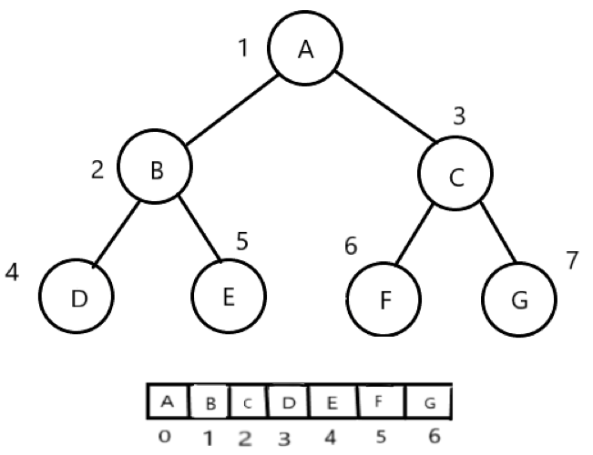
图示是一棵满二叉树也是完全二叉树，对于完全二叉树，只要从根起按层序存储即可，依次从上而下，从左至右存储元素，而对于一般二叉树，如果用顺序存储结构，会非常浪费空间，如下图所示：
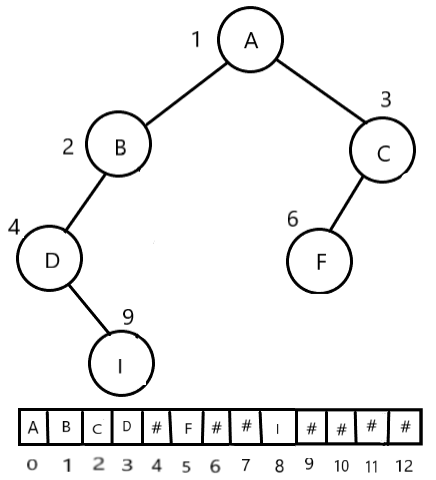
由此可见这种顺序存储结构仅适用于完全二叉树，因为在最坏情况下一个深度为 k 的 k 个结点的单支树，需要 $2^k−1$ 的一维数组来存放，对于一般的二叉树，通常使用链式存储更为合适。
链式存储结构 链接到标题
typedef struct BiNode{
TElemType data; //结点数据域
struct BiTNode *lchild,*rchild; //左右孩子指针
}BiTNode,*BiTree;
二叉树链式存储结构的结点由一个数据元素和分别指向左、右子树的两个指针构成，有时为了便于找到结点的双亲，还可在结点结构中增加一个指向双亲的结点指针域，这两种存储结构分别称为二叉链表和三叉链表。
二叉树的遍历 链接到标题
- 先序遍历 先访问根结点，再先序遍历左子树，然后先序遍历右子树
- 中序遍历 先中序遍历左子树，再访问根结点，最后中序遍历右子树
- 后序遍历 先后序遍历左子树，再后序遍历右子树，最后访问根结点
- 递归遍历 初始化一个栈存 s 放根节点，如果根节点不为空，则根节点入栈，循环遍历根的左子树，如果根节点为空，s 退栈，然后访问 s 的数据，循环遍历根的右子树。
遍历代码示例 链接到标题
//先序
void PreOrderTraverse(Bitree T){
if (T){
visit(T->data, level);
PreOrderTraverse(T->ltree);
PreOrderTraverse(T->rtree);
}
}
//中序
void PreOrderTraverse(Bitree T){
if (T){
PreOrderTraverse(T->ltree);
visit(T->data, level);
PreOrderTraverse(T->rtree);
}
}
//后续
void PreOrderTraverse(Bitree T){
if (T){
PreOrderTraverse(T->ltree);
PreOrderTraverse(T->rtree);
visit(T->data, level);
}
}
//中序遍历非递归算法
void InOrderTraverse(BiTree t) {
stack<BiTree> s;
BiTree p = t;
BiTNode *q = new BiTNode;
while (p || !s.empty()) {
if (p) {
s.push(p);
p = p->leftChild;
}
else {
q = s.top();
s.pop();
cout << q->data;
p = q->rightChile;
}
}
}
根据遍历序列确定二叉树 链接到标题
- 先序和中序序列可以唯一确定二叉树
- 后序和中序序列可以唯一确定二叉树
- 先序和后序无法唯一确定二叉树，因为后序序列先访问左再访问右，如 AB,BA，无法确定 B 是左子树还是右子树。
先序遍历的顺序建立二叉链表 链接到标题
算法步骤:
-
扫描字符序列，读入字符 ch
-
如果 ch 是一个’ ‘字符，则表明该二叉树为空树，否则
- 申请一个 结点空间
- 给结点数据赋值
- 递归创建左子树
- 递归创建右子树
二叉树简易代码示例 链接到标题
typedef struct BiTNode {
char data;
struct BiTNode *leftChild, *rightChile;
}*BiTree,BiTNode;
int CreateTree(BiTree *t) { //先序创建二叉树
char c;
scanf_s("%c", &c,1);
if (c == ' ') {
*t = NULL;
}
else {
*t = (BiTNode *)malloc(sizeof(BiTNode));
(*t)->data = c; //t是指向BiTree的指针， *t表示BiTree，BiTree是指向BiTNode的指针,*t = *BiTNode
CreateTree(&(*t)->leftChild);
CreateTree(&(*t)->rightChile);
}
return 1;
}
int Traverval(BiTree t) { //先序遍历
if (t) {
printf("%c", t->data);
Traverval(t->leftChild);
Traverval(t->rightChile);
}
return 0;
}
void InOrderTraverse(BiTree t) { //中序遍历的非递归算法
stack<BiTree> s;
BiTree p = t;
BiTNode *q = new BiTNode;
while (p || !s.empty()) {
if (p) {
s.push(p);
p = p->leftChild;
}
else {
q = s.top();
s.pop();
cout << q->data;
p = q->rightChile;
}
}
}
void Copy(BiTree t, BiTree &tre) { //复制二叉树
if (!t) {
tre = NULL;
}
else{
tre = new BiTNode;
tre->data = t->data;
Copy(t->leftChild, tre->leftChild);
Copy(t->rightChile, tre->rightChile);
}
}
int Depth(BiTree t) { //计算深度
if (!t)return 0;
else {
int m = Depth(t->leftChild);
int n = Depth(t->rightChile);
return m > n ? m + 1 : n + 1;
}
}
int NodeCount(BiTree t) { //统计结点
if (!t) {
return 0;
}
else{
return 1 + NodeCount(t->leftChild) + NodeCount(t->rightChile);
}
}
//测试样例输出'A','B',' ',' ','C',' ',' ';
//输出ABC
int main() {
BiTree t = NULL;
CreateTree(&t);
Copy(t, s);
InOrderTraverse(s);
cout<<Depth(t)<< NodeCount(t);
Traverval(t);
getchar();
return 0;
}
线索二叉树 链接到标题
在普通的二叉树中，不论二叉树形态如何，子叶的左右指针域必然为空，也就是空链域的个数总是多过非空链域的个数，n 个结点的二叉链表共有 2n 个链域，非空链域为 n-1 个，空链域为 n+1 个。
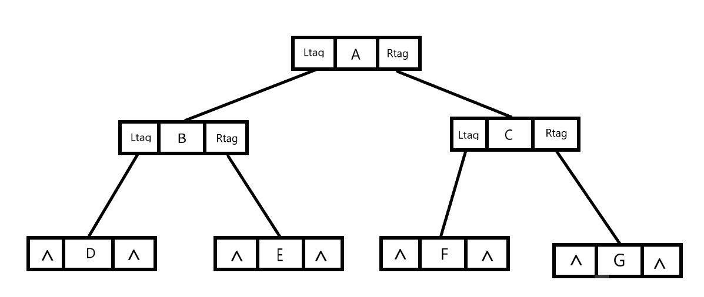
为了有效利用空链域，当对二叉树进行中序遍历时可以得到二叉树得中序序列为 DBEAFCG,可以直观得看出各结点得前驱和后继，但这种关系只能在遍历中得知，因此在建立二叉树时如果记录前驱后继得关系，在后续的遍历会很方便。
现在将二叉树结点中多加两个标志位：
- LTag，0 表示链接 lchild 域结点的左孩子，1 表示链接 lchild 域结点的前驱
- RTag，0 表示链接 lchild 域结点的右孩子，1 表示链接 rchild 域结点的后继
试做如下规定：
- 若结点有左子树，则其 lchild 域指示其左孩子，否则令 lchild 域指示其前驱。
- 若结点有右子树，则其 rchild 域指示其后孩子，否则令 rchild 域指示其后继。
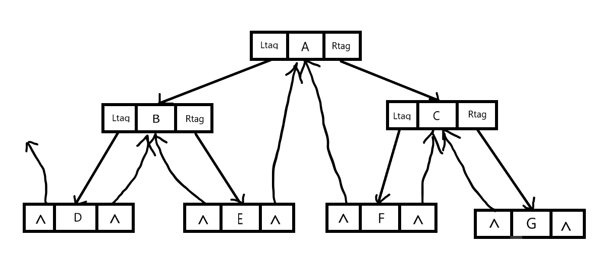
经过链接后，二叉链表的空链域得到了充分的利用,将这种存储结构称为线索链表，将空指针的连接方式称为二叉树的线索化，结构代码如下：
typedef enum {Link,Thread} Pointertag; //Link链接，Thread线索
typedef struct BitNode
{
char data;
struct BitNode *ltree, *rtree;
Pointertag rtag;
Pointertag ltag;
}BitNode, *BitTree;
二叉树的中序线索化 链接到标题
线索化的过程其实是修改空指针的过程，为了记录遍历过程中访问结点的先后关系，附设一个指针 pre 始终指向刚刚访问过的结点，而指针 p 指向当前访问的结点，由此记录遍历过程中访问结点的关系。
算法步骤：
- 如果 p 非空，左子树递归线索化。
- 如果 p 的左孩子为空，则给 p 加上左线索，将 Ltag 置为 1，让 p 的左孩子指向 pre，否则将 p 的 Ltag 置为 0.
- 如果 pre 的右孩子为空，则给 pre 加上右线索，将其 Rtag 置为 1，让 pre 的右孩子指向 p，否则将 pre 的 Rtag 置为 0.
BitTree pre; //指向刚刚访问过的节点
void InThreading(BitTree tree) //中序遍历进行线索化
{
if (tree){
InThreading(tree->ltree);
if (!tree->ltree){
tree->ltag = Thread;
tree->ltree = pre;
}
if (!pre->rtree){
pre->rtag = Thread;
pre->rtree = tree;
}
pre = tree;
InThreading(tree->rtree);
}
}
int InOrderThread_Head(BitTree *head, BitTree tree) ///添加头节点的线索化
{
(*head) = (BitTree)malloc(sizeof(BitNode));
if ((*head) == NULL){
return 0;
}
(*head)->rtree = *head;
(*head)->rtag = Link;
if (!tree){
(*head)->ltree = *head;
(*head)->ltag = Link;
}
else{
pre = *head;
(*head)->ltree = tree;
(*head)->ltag = Link;
InThreading(tree);
pre->rtree = *head;
pre->rtag = Thread;
(*head)->rtree = pre;
}
}
遍历中序线索二叉树 链接到标题
二叉树经过线索化之后，实际上相当于将二叉树转化成了一个双向链表，遍历方式也非常简单，算法步骤如下：
-
指针 p 指向根节点
-
p 为非空树或遍历未结束，循环以下操作
- 沿左孩子向下，到达最左结点，访问此结点
- 沿右线索反复查找当前结点的后继结点并访问，直至右线索为 0 或遍历结束。
- 转向 p 的右子树，沿右子树的左孩子向下，重复此过程。
遍历过程如下：
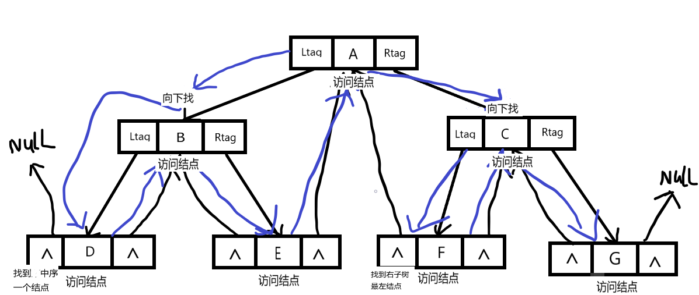
代码示例：
void InOrderThreading(BitTree tree) {
BitTree p = tree->ltree;
while (p != tree){
while (p->ltag == Link){ //到达最左结点
p = p->ltree;
}
printf("%c", p->data);
while (p->rtag == Thread && p->rtree != tree){ //访问后继结点
p = p->rtree;
printf("%c", p->data);
}
p = p->rtree;
}
}
线索二叉树总代码示例 链接到标题
typedef enum {Link,Thread} Pointertag; //Link链接，Thread线索
typedef struct BitNode{
char data;
struct BitNode *ltree, *rtree;
Pointertag rtag;
Pointertag ltag;
}BitNode, *BitTree;
BitTree pre; //指向刚刚访问过的节点
//前序创建二叉树
void CreatBitTree(BitTree *tree){
char c;
scanf_s("%c", &c, 1);
if (' ' == c){
*tree = NULL;
}
else{
*tree = (BitTree)malloc(sizeof(BitNode));
(*tree)->data = c;
(*tree)->rtag = Link;
(*tree)->ltag = Link;
CreatBitTree(&((*tree)->ltree));
CreatBitTree(&((*tree)->rtree));
}
}
//中序遍历进行线索化
void InThreading(BitTree tree){
if (tree){
InThreading(tree->ltree);
if (!tree->ltree){
tree->ltag = Thread;
tree->ltree = pre;
}
if (!pre->rtree){
pre->rtag = Thread;
pre->rtree = tree;
}
pre = tree;
InThreading(tree->rtree);
}
}
//添加头节点
int InOrderThread_Head(BitTree *head, BitTree tree){
(*head) = (BitTree)malloc(sizeof(BitNode));
if ((*head) == NULL){
return 0;
}
(*head)->rtree = *head;
(*head)->rtag = Link;
if (!tree){
(*head)->ltree = *head;
(*head)->ltag = Link;
}
else{
pre = *head;
(*head)->ltree = tree;
(*head)->ltag = Link;
InThreading(tree);
pre->rtree = *head;
pre->rtag = Thread;
(*head)->rtree = pre;
}
}
//遍历二叉树
void InOrderThreading(BitTree tree) {
BitTree p = tree->ltree;
while (p != tree){
while (p->ltag == Link){
p = p->ltree;
}
printf("%c", p->data);
while (p->rtag == Thread && p->rtree != tree){
p = p->rtree;
printf("%c", p->data);
}
p = p->rtree;
}
}
//测试
int main(){
BitTree mytree;
BitTree temp;
CreatBitTree(&mytree);
InOrderThread_Head(&temp, mytree);
InOrderThreading(temp);
system("pause");
return 0;
}
树和森林 链接到标题
树的存储结构 链接到标题
双亲表示法 链接到标题
以一组连续的存储单元存储树的结点，每个结点除了数据域 data 外，还附设一个 parent 域用以指示其双亲结点的位置，双亲表示法的结点形式如下图
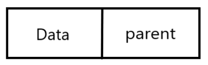
下图所示是一棵树及其双亲表示的存储结构
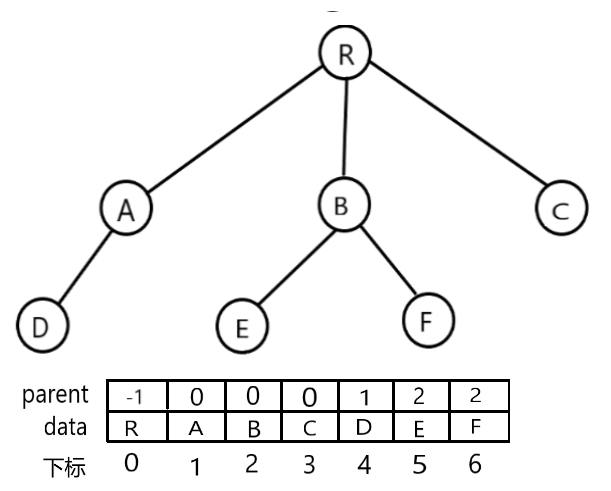
这种存储结构的优点是求结点的双亲和根比较方便，但求结点的孩子时需要遍历整个结构，可以对结点进行改进，比如增加左右兄弟的指针域用来指示兄弟的位置。
双亲表示法结构定义代码
#define MAX_SIZE 100
typedef int TElemType; //结点数据类型
typedef struct PTNode{
TElemType data; //结点数据
int parent; //双亲位置
}PTNode;
typedef struct{ //树结构
PTNode nodes[MAX_TREE_SIZE]; //结点数组
int r,n; //根的位置和结点数
}PTree;
孩子表示法 链接到标题
由于树中每个结点可能有多棵子树，可以使用多重链表，即每个结点有多个指针域，其中每个指针指向一棵子树的根节点，这种方法叫做多重链表表示法，由于树的每个结点的度不同，可以设计两种方案来解决。
- 方案一，指针域的个数就等于树的度，但是如果树中各结点的度相差很大时，显然是浪费空间的，因为很多结点并没有利用，如下图所示
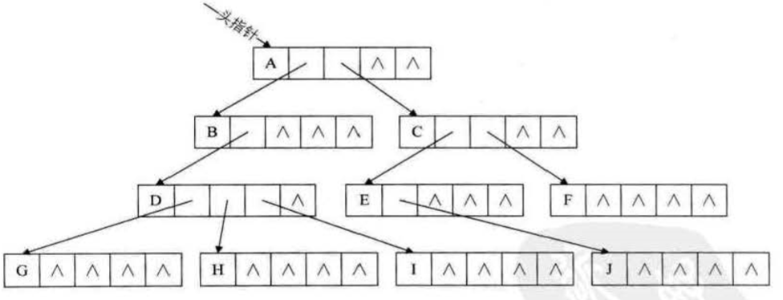
- 方案二，针对方案一进行改进，这种方案每个结点指针域的个数等于该结点的度，额外使用一个位置来存储结点指针域的个数，这种方法克服了浪费空间的缺点，但由于各结点的链表结构不同，在运算上会带来时间的损耗，方法实现如下图
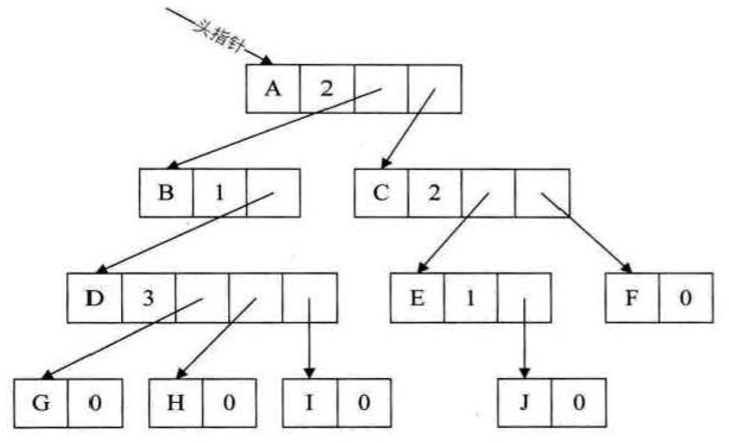
- 孩子表示法，上述方案都有缺点，因此有了第三种方案，也就是孩子表示法，具体是将每个结点的孩子结点排列起来，以单链表作存储结构，则 n 个结点有 n 个孩子链表，如果是叶子结点则此单链表为空，然后 n 个头指针又组成一个线性表，如下图所示
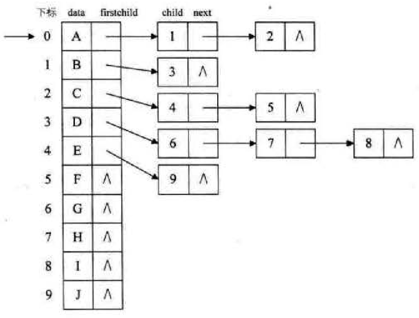
这种结构方便查找某个结点的孩子、兄弟等，遍历整棵树也十分方便，孩子表示法结构定义代码
#define MAX_TREE_SIZE 100
typedef struct CTNode{ //孩子结点
int child;
struct CTNode *next;
}*ChildPtr;
typedef struct{ //表头结构
TElemType data;
ChildPtr firstchild; //头指针域，存储该结点的孩子链表的头指针
}CTBox;
typedef struct{ //树结构
CTBox nodes[MAX_TREE_SIZE];
int r,n; //根的位置和结点数
}CTree;
这种结构的缺点是如果要知道某个结点的双亲，需要遍历整个树，因此可以将双亲表示法和孩子表示法结合起来，也被称为双亲孩子表示法，如下图所示
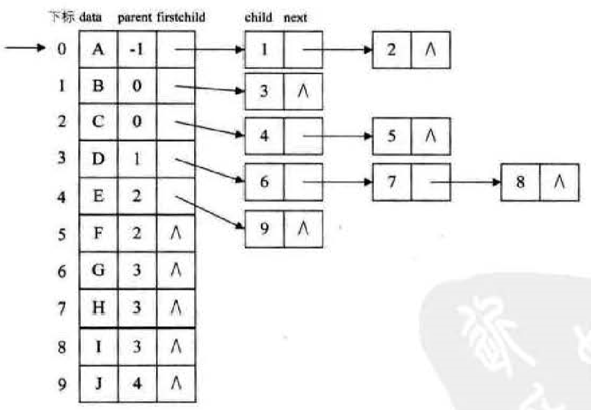
孩子兄弟表示法 链接到标题
上述的方案是从双亲和孩子的角度考虑树的存储结构，如果从树结点的兄弟考虑，会发现，任意一棵树，它的结点的第一个孩子如果存在就是唯一的，它的右兄弟如果存在也是唯一的，因此可以设置两个指针，分别指向该结点的第一个孩子和其结点的右兄弟，结构代码如下：
typedef struct CSNode{
TElemType data;
struct CSNode *firstchild,*rightsib;
}CSNode,*CSTree;
方法实现如图所示

这种结构只需要通过 firstchild 找到结点的长子，再通过长子结点的 rightsib 找到其兄弟结点，可以在此结构上增加一个 parent 指针域来快速查找双亲，这种表示法最大的好处是把一棵复杂的树变成了二叉树，便于利用二叉树的算法来实现对树的操作，上图经过变形后，如下图所示：
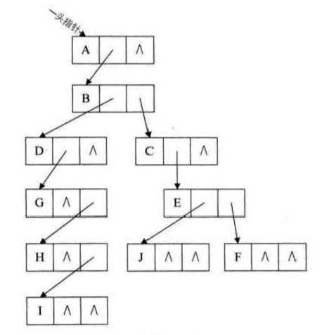
森林与二叉树的转换 链接到标题
树转换为二叉树 链接到标题
- 加线，在所有兄弟结点之间加一条线
- 去线，对树中每个结点，只保留它与第一个孩子结点的连线，删除它与其他孩子结点之间的连线。
- 层次调整，以树的根结点为轴心，将整棵树顺时针旋转一定角度，使结构层次分明，注意第一个孩子是二叉树结点的左孩子，兄弟转换过来的孩子是结点的右孩子。
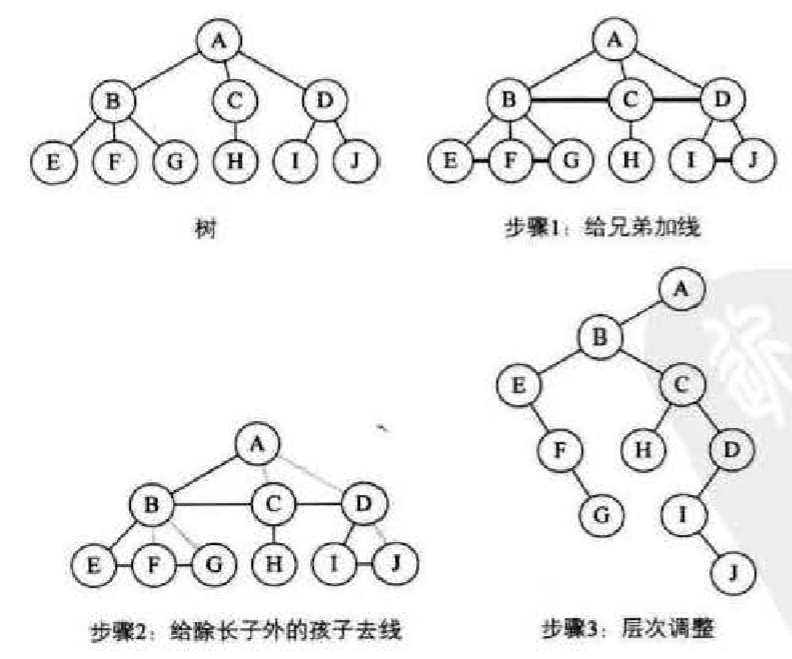
森林转换为二叉树 链接到标题
森林是由若干棵树组成的，所以可以理解为，森林中的每一棵树都是兄弟，转化步骤如下
- 把每个树转换为二叉树
- 第一棵二叉树不动，第二棵树起，依次将后一棵二叉树的根结点作为前一棵树的根结点的右孩子，用线连接，就得到了二叉树。
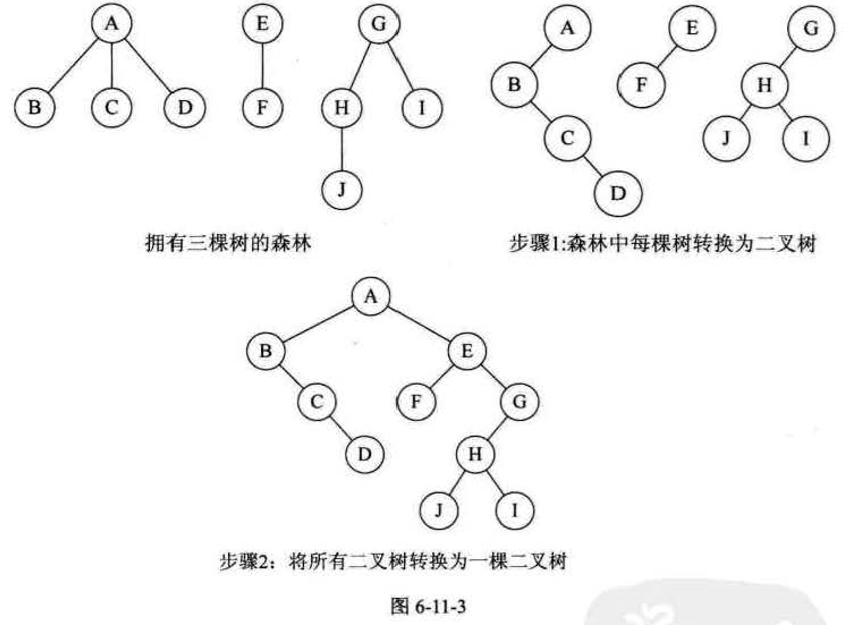
二叉树转换为森林 链接到标题
一棵二叉树够转换成一棵树还是森林，需要看其根节点是否有右孩子，有就是森林，没有就是一棵树，转换森林步骤如下：
- 从根节点开始，若右孩子存在，把与右孩子结点的连线删除，再查看分离后的二叉树，若右孩子存在，则连线删除，这是一个递归过程，直到所有右孩子连线全部删除，即得到分离的二叉树
- 将每棵分离后的二叉树转换为树，即构成森林

树和森林的遍历 链接到标题
树的遍历分为两种方式
- 一种是先根遍历树，即先访问树的根结点，然后依次先根遍历根的每棵子树。
- 另一种是后根遍历，即先依次后根遍历每棵子树，然后再访问根结点。
森林的遍历也分两种方式
- 前序遍历，先访问森林中第一棵树的根结点，然后再依次先根遍历根的每棵子树，再依次用同样的方式遍历除去第一棵树的剩余树构成的森林。
- 后序遍历，先访问森林中第一棵树，后根遍历每棵子树，然后再访问根结点，再依次同样方式遍历除去第一棵树的剩余树构成的森林。
森林的前序遍历和二叉树前序遍历结果相同，森林的后序遍历和二叉树的中序遍历结果相同。